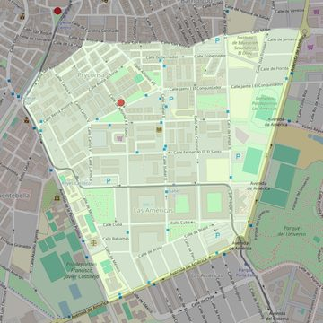

Cristo Liberador
- Arciprestazgo
- Parla
- Población
- Parla
- Dirección postal
- c/ Alfonso X el Sabio, 25
- Código postal
- 28980
- Extensión
- 0,89 km² (89 ha)
- Teléfono
- 918 650 078
- Correo electrónico
- parroquia@salesianosparla.es
- Información demográfica
- De la parroquia · De la población (Parla) · Del arciprestazgo (Parla)


Descargar mapaLímites según decreto
" Partiendo del punto de confluencia de la calle San Antón con la calle San Roque, siguen por el eje de la calle San Roque y por el eje de la calle Milán (en dirección noreste), por el eje de la avenida de América (en dirección suroeste), por el eje de la avenida Juan Carlos I (en dirección noroeste), por el eje de la calle Real (en dirección noreste), por el eje de la calle San Antón (en dirección noreste) hasta su confluencia con la calle de San Roque, punto de partida". (Decreto de rectificación de límites, B.O., Junio 2007, pág. 726)